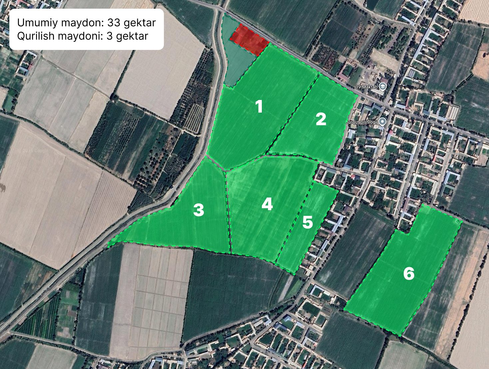
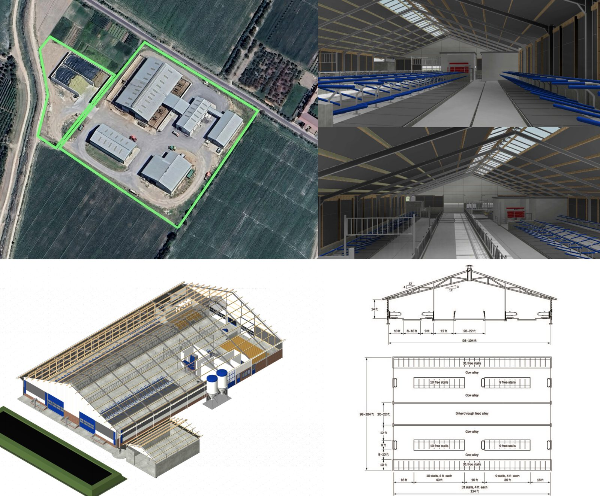
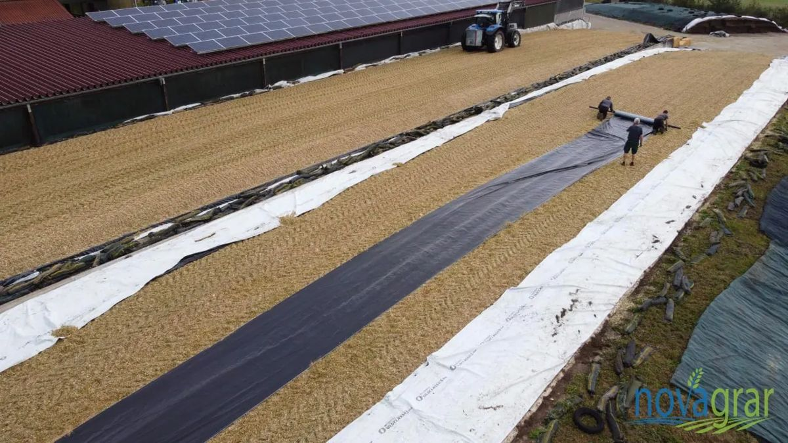
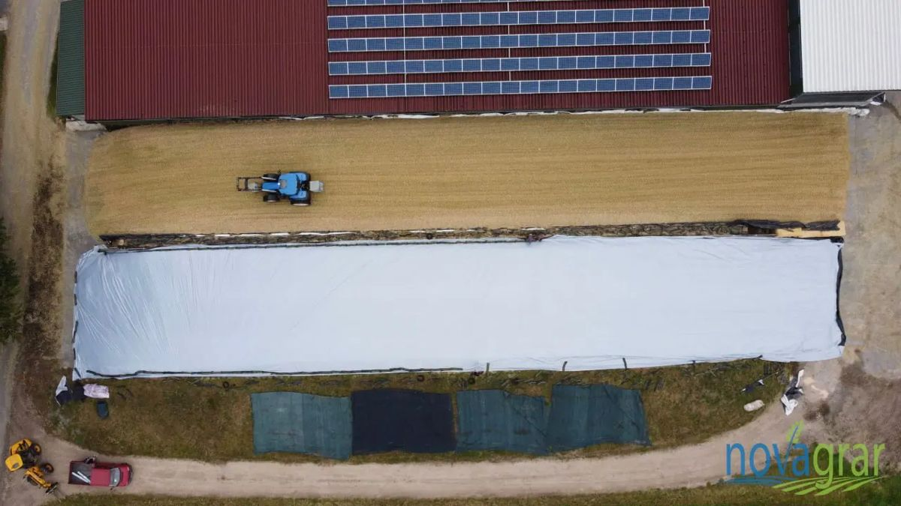

Loyiha rezyumesi
Yer maydoni va undan foydalanish
Kartadagi istalgan dalani bosing: uning maydoni, nima ekilishi, yillik hosili va xarajati chiqadi. Dala maydoni yoki foydalanish turini o'zgartirsangiz, butun biznes-reja qayta hisoblanadi.

Ekin almashinuvi va ish kalendari
2026-yil noyabrida butun ekin maydoniga bug'doy ekiladi. 2027-yil iyunida o'rimdan so'ng bir qismiga ko'p yillik beda ekiladi. Birinchi yili silos sotib olinadi, 2028-yildan bug'doydan bo'shagan yerga tez pishar silos makkajo'xorisi ekiladi. Makka sentabr oxirida o'riladi va noyabrda shu yerga yana bug'doy ekiladi.
Makka bug'doydan keyin 90–100 kunda yetilishi uchun FAO 200–300 guruhidagi tez pishar duragaylar va iyul boshigacha ekish talab qilinadi. Beda yozgi jaziramada ekilsa, unib chiqishi qiyinlashadi, shuning uchun uni iyun oxirida suv bilan to'liq ta'minlangan holda ekish kerak.
Poda aylanishi va mahsulot
Ozuqa balansi
Silos: sotib olinadigan va o'zimiz yetishtiradigan
Infratuzilma va investitsiyalar
Ferma bog'lanmasdan saqlash (free-stall) usulida quriladi: o'rtada traktor o'tadigan 6–7 metrli ozuqa yo'lagi, ikki tomonida yotoq bokslari va mollar yo'laklari. 100 joyli bunday molxona taxminan 38 × 31 metr bo'ladi. Miqdor yoki narxni jadvalning o'zida o'zgartirish mumkin (narxlar mln so'mda).



Silos transheyalari germetik yopiladi: zichlangan silos ikki qavat plyonka bilan qoplanadi, ustidan himoya to'ri tortilib, chetlari qum qopchalari bilan bosiladi. Bu usul silosdagi yo'qotishni oddiy yopishdagi 15% dan taxminan 7% gacha kamaytiradi va silos sifatini yil bo'yi saqlaydi (rasmlar namuna sifatida).
Moliyalashtirish manbalari: kredit va o'z mablag'i
Investitsiya kalendari
Zamonaviy texnologiyalar
Texnologiyalarning samarasi (sut sog'imi, tug'ish darajasi, ozuqa tejami, tejaladigan ish o'rinlari) chap paneldagi "Zamonaviy texnologiyalar" bo'limida kiritiladi va xalqaro amaliyotdagi o'rtacha ko'rsatkichlarga asoslangan taxmin. Ta'sir har bir texnologiyani o'chirib qayta hisoblash orqali aniqlanadi.
Ish o'rinlari
Doimiy xodimlar
Mavsumiy ishchilar
Daromad, xarajat va sof foyda
Barcha summalar mln so'mda, QQSsiz, 2026-yil narxlarida (inflyatsiya hisobga olinmagan).
Pul oqimi va kreditni qaytarish
Sezgirlik tahlili
Xavf-xatarlar va ularni kamaytirish
| Xavf | Kamaytirish choralari |
|---|---|
| Xitoydan mol olib kirish uchun veterinariya ruxsati va karantin | Shartnomadan oldin Veterinariya va chorvachilikni rivojlantirish qo'mitasidan import ruxsatnomasi olinadi, mollar oqsil, brutsellyoz, leykoz va nodulyar dermatitga tekshiriladi. Xitoydan naslli mol olib kirish amaliyoti mavjud, lekin har bir partiya alohida tasdiqlanadi. |
| Uzoq yo'l (3 000 km dan ortiq) va bo'g'oz mollarning bola tashlashi | Bo'g'ozligi 3–6 oylik mollar tanlanadi, yetkazib beruvchi bilan nobud bo'lish kafolati va transport sug'urtasi kelishiladi. |
| Imtiyozli kredit chegarasi | 435-son qaror bo'yicha naslli mol va komplekslar uchun kredit 5 mlrd so'mgacha. Kredit summasi bundan oshsa, loyiha bosqichlarga bo'linadi yoki o'z ulushi oshiriladi (yuqoridagi ogohlantirishga qarang). |
| Sut mahsuldorligining rejadan pastligi (issiq stress) | Molxonada ventilyator va suv purkagichlar, ratsionni zootexnik nazorati, sut hisobini har bir sigir bo'yicha yuritish. |
| Sutni sotish va narx pasayishi | Sut qayta ishlash korxonasi bilan yillik shartnoma, sut sifati (yog' va oqsil) bo'yicha ustama narx. |
| Ikki hosil tizimining kechikishi | Bug'doy o'rimidan keyin 7–10 kunda makka ekish, tez pishar duragaylar, kombayn va silos o'rish texnikasini oldindan band qilish. |
| Suv tanqisligi | Yillik suv limitini oldindan aniqlash, quduq, bedada yomg'irlatib sug'orish. |
| Yuqumli kasalliklar | Emlash jadvali, dezbarer, yangi mollar uchun 30 kunlik karantin, mollarni sug'urtalash. |
Asosiy farazlar va manbalar
- Hisob oyma-oy olib boriladi (2027-yil yanvaridan boshlab 10 yil, paneldan 5 yilga o'zgartirish mumkin) va yillar bo'yicha jamlanadi. Barcha narxlar 2026-yil darajasida, QQSsiz.
- Kredit 2026-yil oxirida olinadi, imtiyozli davrda faqat foiz to'lanadi, keyin asosiy qarz teng ulushlarda qaytariladi.
- Foyda solig'i stavkasi panelda kiritiladi. O'zi yetishtirgan mahsulotni sotuvchi qishloq xo'jaligi korxonalari uchun imtiyozli stavka qo'llanishi mumkin, aniq stavkani buxgalter bilan tasdiqlang. Yer solig'i alohida xarajat sifatida hisoblangan.
- Sotib olingan sigirlar xizmat muddati davomida, binolar va texnika o'z muddatlarida amortizatsiya qilinadi. Fermada tug'ilgan g'unajinlar qiymati foydaga qo'shilmaydi, poda o'sishi faqat sut va buqa sotuvi orqali ko'rinadi.
- Ozuqa narxlari va qurilish narxlari taxminiy. Bankka topshirishdan oldin pudratchi smetasi va yetkazib beruvchi takliflari bilan almashtiriladi.
Manbalar: VMning 435-son qarori (Norma.uz) · Naslli mol importi QQSdan ozod (UzDaily) · XXRdan naslli mol keltirilishi (UzDaily) · Go'sht narxi va importi (Gazeta.uz) · Omuxta yem narxi (OLX.uz) · Bug'doy narxi (Flagma.uz) · Fermerlarga yoqilg'i subsidiyasi (Gazeta.uz)
Bu hujjat taxminiy moliyaviy model asosida tuzilgan va moliyaviy yoki yuridik maslahat o'rnini bosmaydi.
O'zgarishlar tarixi
"Saqlash" tugmasi bosilganda saqlovchining ismi va familiyasi, sana hamda nimalar o'zgargani yoziladi. Istalgan versiyani ochib, hisob-kitobni o'sha holatda ko'rish mumkin. Saqlangan versiyalarni sahifani ochgan har bir kishi ko'radi va ochishi mumkin. Saqlash imkoni sahifa qayerda ochilganiga bog'liq va "Saqlash" tugmasi yonida yoziladi. Keraksiz versiyani "O'chirish" tugmasi bilan olib tashlash mumkin, buning uchun alohida o'chirish paroli so'raladi.